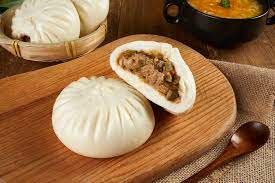

Thai Green Curry Chicken
Origin: Thailand Source: Internet Category: Main Course
Green curry paste is called พริกแกงเขียวหวาน prik gaeng keow waan in Thai, and it's a paste made from a mixture of herbs and spices, which eventually becomes the base for our famous Thai green curry.
Recipe Ingredients
- Coriander seeds, toasted
- Cumin seeds, toasted
- White peppercorns
- Thai green chillies or serrano peppers
- Milder green chilies such as Korean green peppers or jalapenos
- Coarse salt
- Thai basil leaves
- Lemongrass
- Galangal
- Makrut lime zest
- Cilantro roots or cilantro stems
- Shallots
- Garlic
- Fermented shrimp paste
Recipe Steps
- Remove the seeds and pith from some or all of the spicy chilies (Thai/serranos) to reduce the heat, then finely chop them.
- Finely chop all of the other herbs.
- Grind the dry spices into a powder.
- Add all of the chilies and salt to the mortar and pound until mostly fine; if at any point the mixture feels too wet and slippery, add some or all of the dry spices to absorb excess moisture.
- Add the Thai basil leaves and pound into a fine paste.
- Add the lemongrass, galangal, makrut lime zest, and cilantro roots or stems; pound into a fine paste.
- Add the shallots, garlic, and any remaining dry spices and pound into a fine paste.
- Add the shrimp paste, if using, and pound to mix.
Additional Food images

Chinese Steamed Buns
Origin: China Source: Internet Category: AppetizerThese steamed buns are yummy Chinese dim sum that can be made with or without meat filling.
Recipe Ingredients
- 1 ¾ cups all-purpose flour, divided
- ¾ cup warm water, divided
- 1 tablespoon active dry yeast
- 1 teaspoon white sugar
- 2 tablespoons white sugar
- 1 tablespoon vegetable oil
- ¼ teaspoon salt
- ½ teaspoon baking powder
Recipe Steps
- Mix together 1/4 cup flour, 1/4 cup warm water, yeast, and 1 teaspoon sugar in a large bowl. Allow to sit for 30 minutes.
- Mix in remaining 1 1/2 cups flour, remaining 1/2 cup warm water, 2 tablespoons sugar, vegetable oil, and salt. Knead until dough is smooth and elastic. Transfer to a greased bowl, roll to coat with oil, and let sit until tripled in size, 2 1/2 to 3 hours.
- Punch down dough and spread out on a floured board. Sprinkle baking powder evenly on surface of dough; knead for 5 minutes.
- Divide dough in half; set aside one half in a covered bowl. Divide remaining half into 12 equal pieces. Shape each into a ball; transfer each ball to a small square of waxed paper with the smooth surface facing up. Repeat portioning and shaping with remaining dough half. Cover all 24 dough balls and let sit until doubled in size, about 30 minutes.
- Bring some water to a boil in a wok, then reduce heat to medium and keep water at a low boil. Place the steam plate on a small wire rack in the middle of the wok, leaving at least 2 inches of space between the plate and the wok. Working in batches, place buns on waxed paper squares onto the steam plate, leaving 1 to 2 inches between buns.
- Cover and steam buns for 15 minutes. Carefully remove the lid, so condensation doesn't drip onto buns. Continue steaming remaining buns until all are cooked.
Additional Food images

Chicken Tikka Masala
Origin: India Source: Internet Category: Main Course
Chicken tikka masala is a popular curried dish made with boneless chicken, ground spices, onions, tomatoes, cream and herbs.
Recipe Ingredients
- Chicken Marinade
- 3 boneless, skinless chicken breasts
- ½ cup plain yogurt
- 2 tablespoons lemon juice
- 6 cloves garlic, minced
- 1 tablespoon minced ginger
- 2 teaspoons salt
- 2 teaspoons ground cumin
- 2 teaspoons garam masala
- 2 teaspoons paprika
- Sauce
- 3 tablespoons oil
- 1 large onion, finely chopped
- 2 tablespoons minced ginger
- 8 cloves garlic, minced
- 2 teaspoons ground cumin
- 2 teaspoons ground turmeric
- 2 teaspoons ground coriander
- 2 teaspoons paprika
- 2 teaspoons chili powder
- 2 teaspoons garam masala
- 1 tablespoon tomato puree
- 3 ½ cups tomato sauce
- 1 ¼ cups water
- 1 cup heavy cream
- ¼ cup fresh cilantro, for garnish
- cooked rice, for serving
- naan bread, for serving
Recipe Steps
- Slice the chicken into bite-sized chunks. Combine the cubed chicken with the yogurt, lemon juice, garlic, ginger, salt, cumin, garam masala, and paprika and stir until well-coated.
- Cover and refrigerate for at least 1 hour, or overnight.
- Preheat the oven to 500°F (260°C). Line a high-sided baking pan or roasting tray with parchment paper.
- Place the marinated chicken pieces on bamboo or wooden skewers, then set them over the prepared baking pan, making sure there is space underneath the chicken to help distribute the heat more evenly. Bake for about 15 minutes, until slightly dark brown on the edges.
- Make the sauce: Heat the oil in a large pot over medium heat, then sauté the onions, ginger, and garlic until tender but not browned. Add the cumin, turmeric, coriander, paprika, chili powder, and garam masala and stir constantly for about 30 seconds, until the spices are fragrant. Stir in the tomato puree, tomato sauce, and 1 ¼ cups of water, then bring to a boil and cook for about 5 minutes. Pour in the cream.
- Remove the chicken from the skewers and add to the sauce, cooking for another 1-2 minutes. Garnish with cilantro and serve over rice or alongside naan bread.
Additional Food images